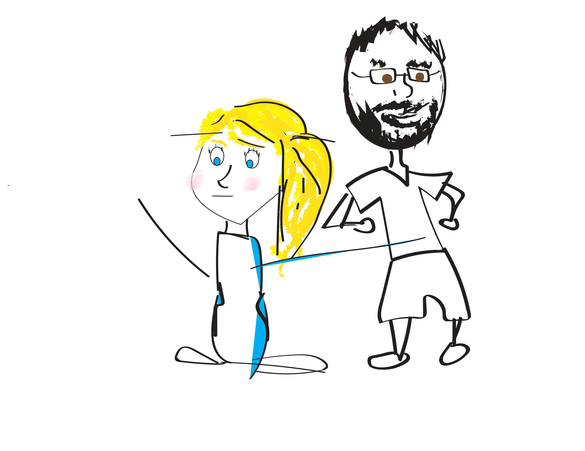
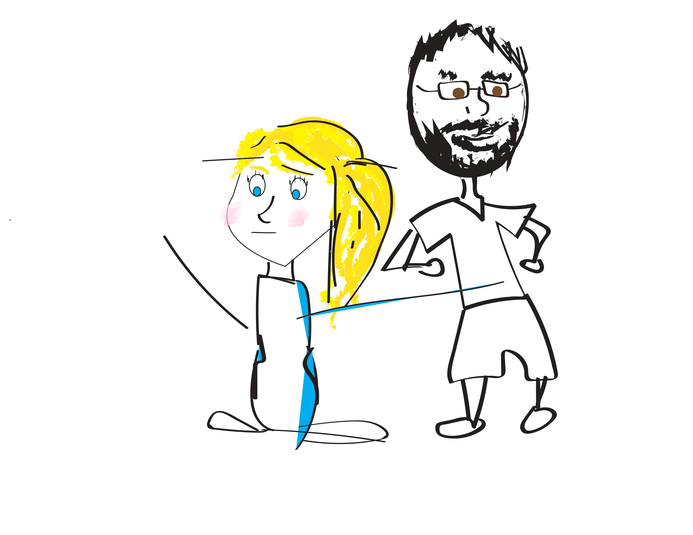

You can easily link to other html files that you've created within your project folder. Check out this example of a page that uses some interactive elements to play with the interface.
 

This is a sample web page. You can read more about my research and teaching at UNC here, or on my personal webpage.